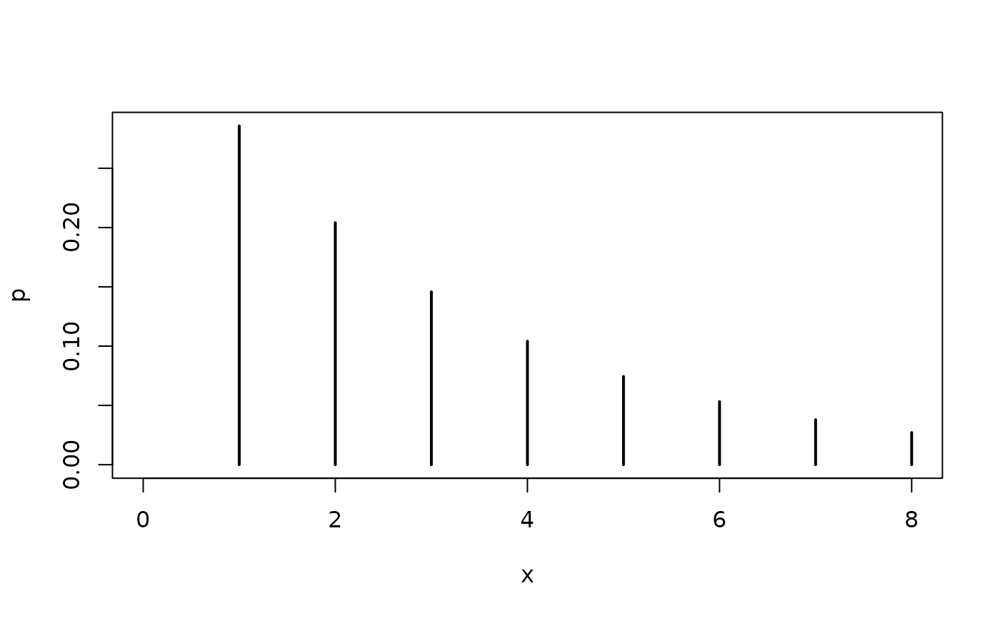

Density, distribution function, quantile function, and random
generation for the zero-truncated negative binomial distribution with
parameters mu and theta (or size).
Usage
dztnbinom(x, mu, theta, size, log = FALSE)
pztnbinom(q, mu, theta, size, lower.tail = TRUE, log.p = FALSE)
qztnbinom(p, mu, theta, size, lower.tail = TRUE, log.p = FALSE)
rztnbinom(n, mu, theta, size)Arguments
- x
vector of (non-negative integer) quantiles.
- mu
vector of (non-negative) negative binomial location parameters.
- theta, size
vector of (non-negative) negative binomial overdispersion parameters. Only
thetaor, equivalently,sizemay be specified.- log, log.p
logical indicating whether probabilities p are given as log(p).
- q
vector of quantiles.
- lower.tail
logical indicating whether probabilities are \(P[X \le x]\) (lower tail) or \(P[X > x]\) (upper tail).
- p
vector of probabilities.
- n
number of random values to return.
Details
The negative binomial distribution left-truncated at zero (or zero-truncated negative binomial for short) is the distribution obtained, when considering a negative binomial variable Y conditional on Y being greater than zero.
All functions follow the usual conventions of d/p/q/r functions
in base R. In particular, all four ztnbinom functions for the
zero-truncated negative binomial distribution call the corresponding nbinom
functions for the negative binomial distribution from base R internally.
Examples
## theoretical probabilities for a zero-truncated negative binomial distribution
x <- 0:8
p <- dztnbinom(x, mu = 2.5, theta = 1)
plot(x, p, type = "h", lwd = 2)

## corresponding empirical frequencies from a simulated sample
set.seed(0)
y <- rztnbinom(500, mu = 2.5, theta = 1)
hist(y, breaks = -1:max(y) + 0.5)